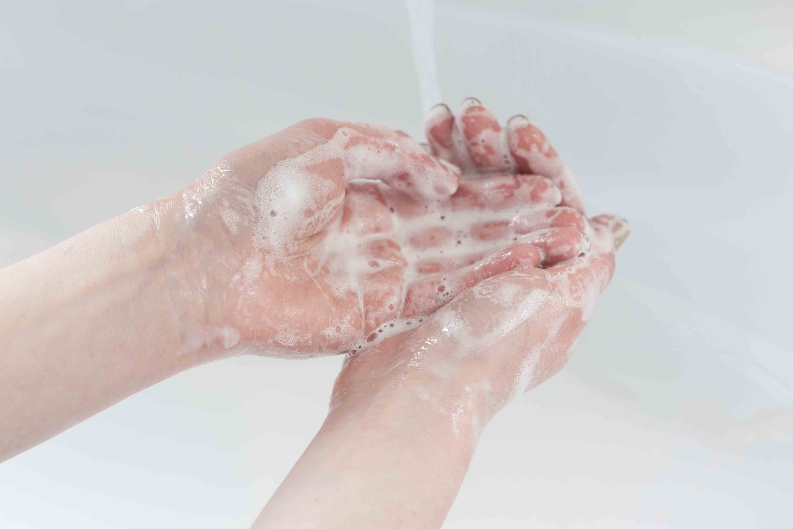

Memulai perjalanan menuju gaya hidup sehat bukanlah suatu hal yang sulit. Bahkan, langkah-langkah kecil yang kita ambil setiap hari dapat memberikan dampak yang signifikan
untuk fisik dan psikis kita.
Berikut beberapa cara yang bisa kita lakukan untuk memulai gaya hidup sehat.
1. Rajin olahraga
Kita tidak harus menjadi atlet profesional untuk memulai gaya hidup sehat. Mulailah dengan olahraga ringan seperti berenang.
Sisihkan waktu setidaknya 30 menit setiap hari untuk bergerak aktif agar oksigen bisa mengalir lancar ke seluruh tubuh.
Selain itu, berolahraga merupakan cara paling efektif untuk membakar kalori, lho!
2. Mengonsumsi makanan sehat
Sering mengonsumsi sayur dan buah menjadi pintu masuk memulai hidup sehat. Selain itu, biasakan memasak makanan sendiri
di rumah untuk memastikan kebersihan dan kualitas makanan yang dikonsumsi. Kita juga bisa membiasakan diri untuk mencatat
asupan makanan harian untuk menghindari overeating.
3. Mencukupi kebutuhan cairan
Untuk menjaga tubuh tetap terhidrasi, minum setidaknya dua liter air putih per hari. Cara ini membuat keseimbangan cairan tubuh
terjaga dan tubuh terhindar dari berbagai penyakit. Tambahkan asupan cairan di saat sedang aktif bergerak untuk menghindari tubuh dari dehidrasi.
4. Mengelola stres
Kesehatan mental sama pentingnya dengan kesehatan fisik. Untuk menangani stres, belajarlah teknik pernapasan.
Kenali pemicu stres dan cari cara untuk mengelolanya. Jika kita berhasil menjaga suasana hati dan menjaga keseimbangan emosi,
risiko gangguan kesehatan pun bisa kita hindari.
5. Tidur cukup
Pastikan tubuh mendapat istirahat yang cukup setiap malam. Tidur berkualitas selama 7-9 jam per hari akan membuat
tubuh memiliki cukup energi untuk diajak beraktivitas sehari-hari.
6. Mengurangi konsumsi gula dan garam
Mengurangi konsumsi gula dan garam dalam makanan dapat mengurangi risiko penyakit kronis, seperti diabetes dan hipertensi.
Mulailah untuk membatasi konsumsi makanan dan minuman manis, serta makanan yang terlalu asin, seperti junk food.
7. Menjaga kebersihan rumah
Lingkungan yang bersih dan sehat sangat penting untuk kesehatan. Jadi, kita perlu menjaga rumah dan lingkungan sekitar tetap bersih.
Pastikan ventilasi udara berfungsi dengan baik agar pertukaran udara berjalan dengan baik.
8. Menghindari kebiasaan buruk
Merokok dan minum alkohol merupakan habit buruk yang menimbulkan masalah kesehatan di masa depan.
Hentikan kebiasaan ini dan ganti dengan kebiasaan yang lebih sehat.
9. Rajin mencuci tangan

Mencuci tangan merupakan kebiasaan sederhana, tetapi salah satu cara efektif untuk mencegah penyebaran penyakit.
Biasakan untuk mencuci tangan secara rutin, terutama sebelum makan, setelah menggunakan toilet atau memegang barang.
10. Rutin memeriksa kondisi kesehatan
Pemeriksaan kondisi kesehatan perlu dilakukan secara berkala mendeteksi masalah kesehatan yang mungkin dialami tubuh tanpa kita sadari.
Jika dilakukan sejak dini, justru kita dapat mencegah atau mengobati sebuah penyakit sebelum menjadi lebih serius.